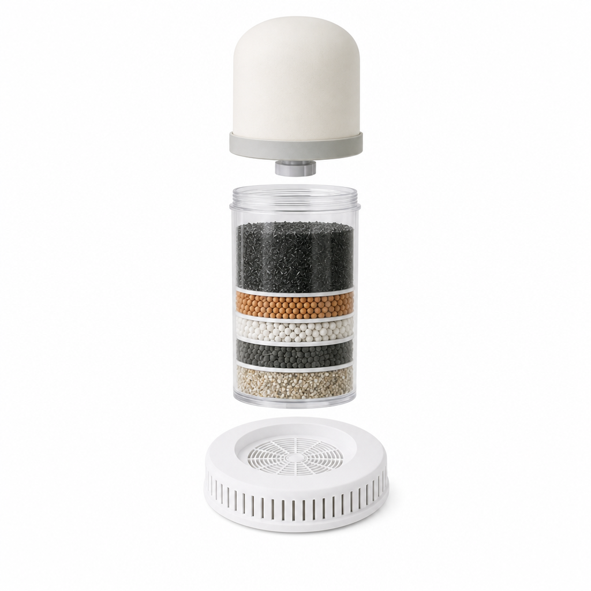

Alivio · Por dentro
Tres etapas de filtrado

1
Filtro cerámico
2
Filtro multimedia
5 capas: carbón activado y de plata, WMSM-300, arena de sílice, zeolita y arena mineral
3
Piedra mineral
Esquema ilustrativo. Los resultados dependen de la calidad del agua de entrada.